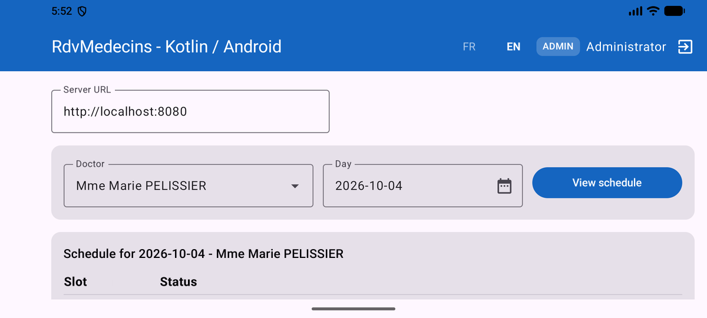

6. Capítulo 5 - Ejecución de la aplicación: emulador, teléfono, APK
6.1. Un único destino: Android
El Capítulo 5 del curso de Flutter mostró cómo un único código fuente se compila para tres familias de destinos: móvil, escritorio y web. Aquí no ocurre eso: el cliente de este documento es una aplicación Android, y solo Android. En cambio, usa directamente las herramientas y bibliotecas de la plataforma ([Gradle], [Android Studio], [ViewModel], [SharedPreferences]...), sin una capa de abstracción. La última sección de este capítulo explica lo que haría falta para apuntar también a iOS, al escritorio y a la web.
Los comandos de este capítulo usan la herramienta [adb] y el wrapper de Gradle. En Windows, si las carpetas [platform-tools] y [emulator] del SDK no están en [PATH], reemplace [adb] por [& "$env:LOCALAPPDATA\Android\Sdk\platform-tools\adb.exe"] (véase el Capítulo 1).
6.2. Destino: emulador
Este es el destino que se usa a lo largo del Capítulo 4. Desde Android Studio: seleccione el emulador en la lista de dispositivos y luego elija [Run]. Desde la línea de comandos, en la carpeta del proyecto:
6.2.1. La trampa de la red: localhost ya no se refiere a la PC de desarrollo
Es EL detalle importante que hay que conocer en el desarrollo móvil, ajeno a Kotlin o a Compose: [localhost] (o [127.0.0.1]), en el campo “URL del servidor”, se refiere a la máquina que ejecuta el código. Sin embargo, el emulador es una máquina VIRTUAL, distinta de la PC de desarrollo donde se ejecuta el servidor [NestJS], aunque ambos parezcan “estar en la misma computadora”. Hay dos soluciones:
- la dirección especial [http://10.0.2.2:8080]: propia del emulador oficial de Android, se redirige al [localhost] de la máquina anfitriona. Es el valor predeterminado del campo “URL del servidor” (véase [SettingsService.kt]);
- el comando [adb reverse tcp:8080 tcp:8080], seguido de la URL [http://localhost:8080]. [adb reverse] crea un túnel: toda conexión del dispositivo a SU puerto 8080 es reenviada por [adb] al puerto 8080 de la computadora. El túnel desaparece cuando el emulador se detiene (o cuando se reinicia el servidor [adb]): entonces hay que volver a ejecutar el comando.
La primera solución es la más simple. Sin embargo, en la computadora usada para redactar este documento no funcionó: la conexión a [10.0.2.2:8080] falló tras el tiempo de espera de 10 segundos, aunque el servidor respondía con normalidad en [localhost]. Este tipo de problema depende de la configuración de red de la PC (firewall, VPN, software de virtualización): [adb reverse] evita este inconveniente, ya que entonces el tráfico pasa por [adb] y no por la red virtual del emulador. El mensaje que muestra la aplicación (“Incorrect login or password.”) no aporta mucha información; la causa exacta se encuentra en el registro de Android, gracias a las llamadas del cliente a [Log.w(...)] (la pestaña [Logcat] de Android Studio, filtrada por [RdvMedecins], o el comando [adb logcat -s RdvMedecins]):
El comando [adb reverse] y la URL [http://localhost:8080] (guardada por [SettingsService]) resolvieron el problema: es la configuración usada en todas las capturas de pantalla del Capítulo 4.
6.3. Destino: teléfono
El teléfono configurado en el Capítulo 1 (opciones de desarrollador, depuración por USB) aparece en [adb devices] y en la lista de dispositivos de Android Studio: funciona exactamente igual que el emulador ([Run] o [gradlew installDebug]). Solo cambia la URL del servidor:
- teléfono conectado por cable USB: el comando [adb reverse tcp:8080 tcp:8080] también funciona con un teléfono real, y la URL [http://localhost:8080] llega entonces al servidor de la PC a través del cable. Es la solución más simple;
- teléfono en la misma red Wi-Fi que la PC: use la dirección IP LOCAL de la PC en esa red (por ejemplo, [http://192.168.1.48:8080]; el comando [ipconfig] la muestra en Windows), nunca [localhost] ni [10.0.2.2], ya que en este caso ambos se refieren al propio teléfono. El firewall de la PC debe permitir entonces las conexiones entrantes al puerto 8080 (Windows lo solicita la primera vez que se inicia Node.js).
El servidor [NestJS] escucha en todas las interfaces de red de la PC ([0.0.0.0]): no se necesita ningún cambio de su parte.
6.4. Dos restricciones propias de los dispositivos móviles
6.4.1. Tráfico HTTP sin cifrar
A partir de Android 9 (API 28), de forma predeterminada, una aplicación ya no puede comunicarse en HTTP “en texto plano” ([http://], sin cifrar): solo se permite [https://]. Como el servidor de este curso escucha en HTTP simple, el manifiesto del cliente declara la excepción [android:usesCleartextTraffic="true"] (véase el Capítulo 4). Sin ella, cualquier solicitud falla con la excepción [CLEARTEXT communication to 10.0.2.2 not permitted by network security policy].
Esta autorización se aplica a TODOS los servidores. Es posible una configuración más granular mediante un archivo [res/xml/network_security_config.xml] que permite HTTP en texto plano solo para ciertos nombres de host:
El archivo se declara en el manifiesto mediante el atributo [android:networkSecurityConfig="@xml/network_security_config"] de la etiqueta [<application>]. Este documento no lo usa: la dirección IP de una PC en una red Wi-Fi no se conoce de antemano. En ambos casos, estos ajustes se aplican solo al desarrollo: en producción, el servidor se expondría en [https://] (por ejemplo, detrás de un “proxy inverso” como Nginx), lo que haría innecesaria cualquier excepción.
6.4.2. Permiso de acceso a la red
Sin la línea [<uses-permission android:name="android.permission.INTERNET" />] en el manifiesto, la primera solicitud falla y lanza una excepción [SocketException: socket failed: EPERM (Operation not permitted)] (o una excepción [SecurityException: Permission denied (missing INTERNET permission?)] cuando la URL contiene un nombre de host). Es un descuido frecuente: la plantilla de proyecto de Android Studio no la incluye.
6.5. Rotación de pantalla
Al rotar el teléfono (o el emulador, con los botones de rotación de su barra lateral), la actividad se DESTRUYE y luego se RECREA (véase el Capítulo 3). El cliente lo maneja gracias a tres decisiones tomadas en el Capítulo 4:
- los servicios los construye [RdvMedecinsApplication], que no se recrea;
- el estado de la pantalla (médicos, pacientes, agenda, horario que se está reservando) se almacena en [AppViewModel], que Android conserva;
- los estados menores de la interfaz (inicio de sesión en curso, médico y día seleccionados, paciente seleccionado en el cuadro de diálogo) se almacenan en [rememberSaveable].
Las siguientes capturas de pantalla se tomaron con el cuadro de diálogo de reserva abierto: primero en modo horizontal y luego de nuevo en modo vertical. El cuadro de diálogo, la agenda y el médico y el día seleccionados siguen ahí:


En modo horizontal, la pantalla tiene más de 600 dp de ancho: la barra de título muestra el título completo y el nombre del usuario, y [DoctorDayPicker] dispone sus tres elementos en una sola línea:

Para evaluar el valor de estas decisiones, podemos probar lo contrario: en [App.kt], reemplace [val vm = viewModel { AppViewModel(auth, api) }] por [val vm = remember { AppViewModel(auth, api) }]. Después de una rotación, la agenda desaparece y hay que volver a realizar la búsqueda: [remember] no sobrevive a la recreación de la actividad.
6.6. Una pantalla estrecha: la trampa del diseño
Un teléfono en modo vertical mide apenas unos 400 dp de ancho. La primera versión de [ScheduleView.kt], como la del cliente Flutter, tropezó con este ancho. Cada fila de la agenda repartía el ancho disponible entre sus tres columnas con pesos fijos: 30 % para la hora, 45 % para el estado y 25 % para el botón ([Modifier.weight(0.25f)]). En el teléfono, con la interfaz en francés, el 25 % de la fila no alcanzaba para la etiqueta “Réserver”, que se truncaba a “Rése”:


La corrección (captura de pantalla de la derecha; véase [ScheduleView.kt] en el Capítulo 4): el botón ya no tiene peso y ocupa el ancho de su texto; la hora tiene un ancho fijo; el estado ocupa el ancho restante ([Modifier.weight(1f)]). De ello se desprenden dos reglas, las mismas que para el cliente Flutter:
- Nunca suponga un ancho: deje que un elemento adopte el tamaño de su contenido, o verifique el ancho disponible real ([BoxWithConstraints], [LocalConfiguration.current.screenWidthDp]) para elegir un diseño;
- Pruebe pronto en una pantalla estrecha y en ambos idiomas: las etiquetas en inglés (“Book”, “Cancel”) son más cortas que las francesas, y un error puede aparecer solo en uno de los dos.
6.7. Generar un APK
[gradlew assembleDebug] (Capítulo 1) genera [app/build/outputs/apk/debug/app-debug.apk], una aplicación “debug”: firmada con una clave de desarrollo generada automáticamente por Android Studio, puede instalarse en un emulador o en un teléfono ([adb install app-debug.apk]), pero no puede publicarse en Play Store. Para una distribución real:
Una versión de producción debe firmarse con una clave personal, creada una sola vez y guardada en un lugar seguro: Android Studio ofrece para ello el menú [Build / Generate Signed App Bundle or APK...]. Play Store también exige un ícono, una política de privacidad... y un servidor en [https://].
6.8. ¿Y qué hay de iOS, las aplicaciones de escritorio y web? Kotlin Multiplatform
El cliente Flutter del curso generaba aplicaciones móviles, de escritorio y web a partir de una única base de código. En el ecosistema de Kotlin existe el equivalente: [Kotlin Multiplatform] (KMP) permite compartir código Kotlin entre Android, iOS, escritorio (JVM) y la web, mientras que [Compose Multiplatform], de JetBrains, extiende Jetpack Compose a esos mismos destinos. Portar el cliente de este documento consistiría principalmente en reemplazar las bibliotecas específicas de Android por equivalentes multiplataforma:
- [OkHttp] → [Ktor Client], el cliente HTTP multiplataforma de JetBrains;
- [SharedPreferences] → una biblioteca de almacenamiento clave-valor multiplataforma (por ejemplo, [DataStore], que ahora es multiplataforma);
- la carpeta de Android [assets/] → recursos de Compose Multiplatform;
- [android.util.Log], [Handler] → sus equivalentes multiplataforma (o corrutinas en [Dispatchers.Main]);
- la clase Application y la actividad se mantienen, pero solo para el destino Android: cada destino tiene su propio punto de entrada.
Las funciones @Composable, las clases [@Serializable], las corrutinas e incluso el ViewModel (disponible en multiplataforma) se conservarían casi sin cambios. Este port queda fuera del alcance de este documento.
6.9. Tabla resumen
- Emulador de Android - [Run] o [gradlew installDebug] - URL del servidor: [http://10.0.2.2:8080], o [adb reverse tcp:8080 tcp:8080] seguido de [http://localhost:8080];
- Teléfono por USB - [Run] o [gradlew installDebug] - URL: [adb reverse tcp:8080 tcp:8080], luego [http://localhost:8080];
- Teléfono por Wi-Fi - [Run] o [gradlew installDebug] - URL: dirección IP local de la PC, puerto 8080 abierto en el firewall;
- en todos los casos: permiso [INTERNET] y autorización para HTTP en texto plano en el manifiesto;
- Distribución: [gradlew assembleRelease] (APK) o [bundleRelease] (Play Store), con una clave de firma personal.